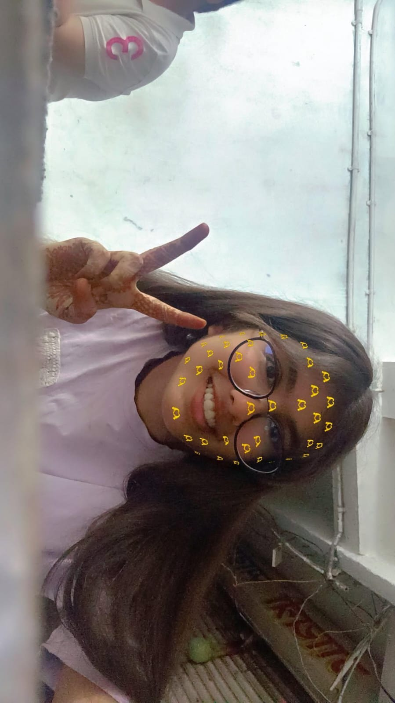
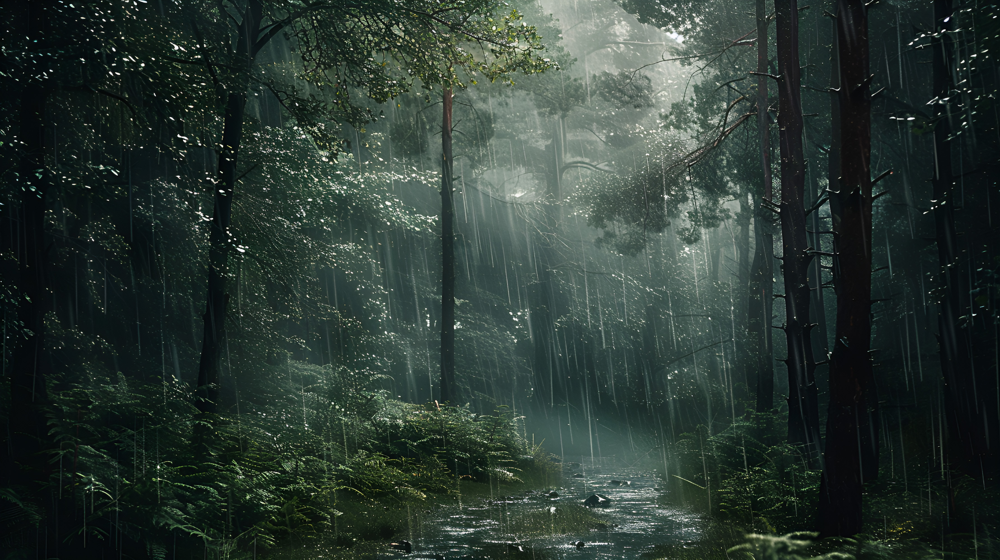
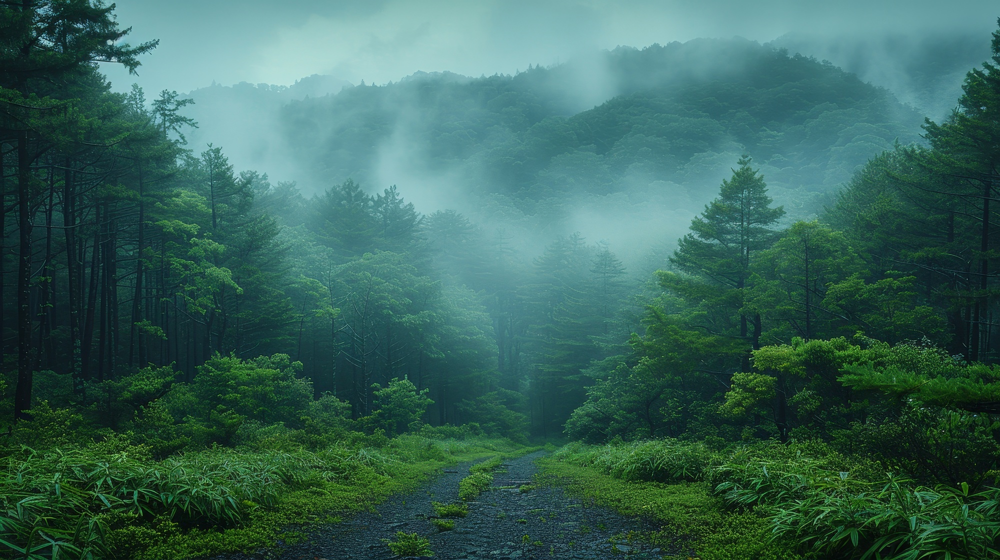

Hellow Everyone . This is me Durva Sahuji another young vlogger of my city i m 15 years old and very intrested in vloggin since i m also a web developer i came up with an idea to upload my vlogs in wrriten format by creating my own website and write my own vlogs also i love traveling and hence came up with a travel vlog idea where in i will be sharing experince of the places i have visited and how beautiful it was also with what challenge i came up with when i was traveling and experincing all this all that i will be sharing in my website. I hope that you guys will like my website i come up with every new blog once in a week so do stay tune for more intresting blogs .

Exploring Wind
20 march 2025 / 11:00 PM

Harishchandra Gadh
16 June 2024 / 11:00 PM
Jungle Safari
20 march 2025 / 11:00 PM
TOUEHRIOWHFIOWEHFOIWENFKWNFBUEWFOUWEFPICNWEIOBNWEUHFIWNCIWN DC0EHFOISNCKSVB9EHIONDPSNCBDUHWEFOIHWPIASOPMCKSNCUWBFUEHWFOI JDIPNABSWIFUWEHFIANDJSBFIDC0EHFOISNCKSVB9EHIONDPSNCBDUHWEFOIHWP IASOPMCKSNCUWBFUEHWFOIJDIPNABSWIFUWEHFIANDJSBFIDC0EHFOISNCKSVB 9EHIONDPSNCBDUHWEFOIHWPIASOPMCKSNCUWBFUEHWFOIJDIPNABSWIFUWEHF IANDJSBFIDC0EHFOISNCKSVB9EHIONDPSNCBDUHWEFOIHWP IASOPMCKSNCUWBFUEHWFOI JDIPNABSWIFUWEHFIANDJSBFI

Puran poli, Maharashtra
16 June 2024 / 11:00 PM
Dal baati, Rajasthan
16 June 2024 / 11:00 PM

Jalebi&Fhafda, Gujrat
16 June 2024 / 11:00 PM

sweet, Assam
16 June 2024 / 11:00 PM

Chat, Uttar Pradesh
16 June 2024 / 11:00 PM

dosa, Kerela
16 June 2024 / 11:00 PM